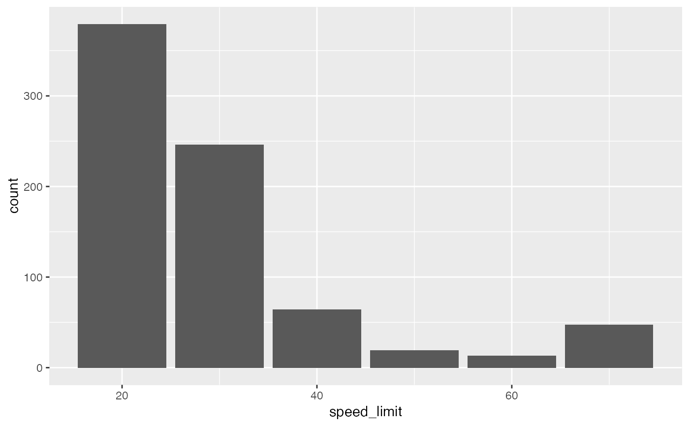

Road accidents and their causes are of particular importance to road safety experts looking to prevent them.
accidents
A tibble with 768 rows and 31 variables:
Accident ID
1- Fatal, 2- Serious, 3- Slight
Number of vehicles involved in accident
Number of people injured in the accident
Date of the accident
1-Sunday, ..., 7-Saturday
Time of the accident on the 24h clock.
Gives information about the type of area the accident occurred in.
Class of 1st road involved in accident. 0 - Not at junction or within 20 metres, 1 - Motorway, 2 - A(M) roads (A-roads with motorway restrictions, 3 - A-road, 4- B-road, 5- C-road, 6 - Unclassified
ID of 1st road (0 if unclassified).
Type of road. 1 - Roundabout, 2 - One way street, 3 - Dual carriageway, 6 - Single carriageway, 7 - Slip road, 9 - Unknown, 12 - One way street/Slip road, -1 - Data missing or out of range.
Speed limit on the road in mph.
0 - Not at junction or within 20 metres, 1 - Roundabout, 2- Mini-roundabout, 3- T or staggered junction, 5 - Slip road, 6- Crossroads, 7- More than 4 arms (not roundabout), 8 - Private drive or entrance, 9 - Other junction, -1 - Data missing or out of range
0- Not at junction or within 20 metres, 1- Authorised person, 2- Auto traffic signal, 3- Stop sign, 4- Give way or uncontrolled, -1 Data missing or out of range
Class of 2st road involved in accident. 0 - Not at junction or within 20 metres, 1 - Motorway, 2 - A(M) roads (A-roads with motorway restrictions, 3 - A-road, 4- B-road, 5- C-road, 6 - Unclassified
ID of 2nd road (0 if unclassified).
Level of human control at a pedestrian crossing. 0- None within 50 metres, 1- Control by school crossing patrol, 2- Control by other authorised person, -1 - Data missing or out of range
Level of facilities controlling a pedestrian crossing. 0- No physical crossing facilities within 50 metres. 1 - Zebra, 4- Pelican, puffin, toucan or similar non-junction pedestrian light crossing, 5 - Pedestrian phase at traffic signal junction, 7 - Footbridge or subway, 8 - Central refuge, -1 - Data missing or out of range
1 - Daylight, 4 - Darkness - lights lit, 5 - Darkness - lights unlit, 6- Darkness - no lighting, 7 - Darkness - lighting unknown
1- Fine, no high winds, 2- Raining, no high winds, 3- Snowing, no high winds, 4 - Fine + high winds, 5 - Raining + high winds, 6 - Snowing + high winds, 7 - Fog or mist, 8 - Other, 9 - Unknown. -1 - Data missing or out of range
1- Dry, 2- Wet or damp, 3- Snow, 4- Frost or ice, 5- Flood over 3cm deep, 6- Oil or diesel, 7- Mud, -1 Data missing or out of range
0- None, 1- Auto traffic signal - out, 2 - Auto signal part defective, 3- Road sign or marking defective or obscured, 4- Roadworks, 5- Road surface defective, 5- Oil or diesel, 7- Mud, -1 - Data missing or out of range
0- None, 1- Vehicle load on road, 2- Other object on road, 3- Previous accident, 4- Dog on road, 5- Other animal on road, 6- Pedestrian in carriageway - not injured, 7 - Any animal in carriageway (except ridden horse), -1 - Data missing or out of range
1- Yes, 2 - No, 3 - No - accident was reported using a self completion form (self rep only)
https://data.gov.uk/dataset/cb7ae6f0-4be6-4935-9277-47e5ce24a11f/road-safety-data/datafile/36f1658e-b709-47e7-9f56-cca7aefeb8fe/preview
The data come from the UK Government at data.gov.uk. It's been modified to better serve the goals of introductory data science education.
